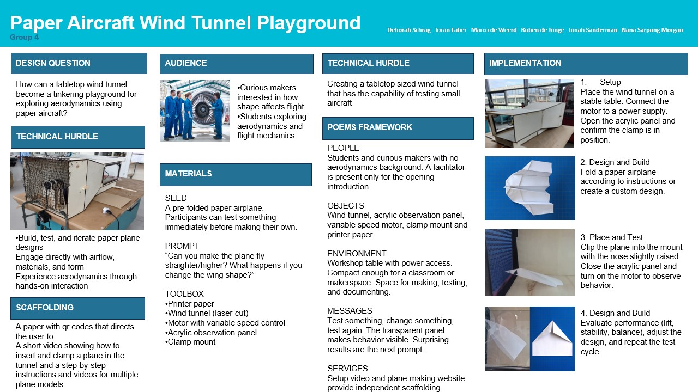

Overview
This project is about creating a small tabletop wind tunnel that can be used as a tinkering playground for paper airplanes.
The main idea is to make aerodynamics more accessible by letting people directly test their designs instead of only thinking about them. Users can build a plane, place it in the wind tunnel and immediately see how it behaves.
The system is designed for curious makers and students who want to explore how shape affects flight. It does not require prior knowledge, and a pre-folded airplane is provided so people can start testing right away.
The wind tunnel itself is the central tool. Together with simple materials like paper and a clamp system, it allows users to build, test and iterate quickly.
A key part of the design is that it encourages experimentation. Instead of giving one correct solution, it invites users to change things, observe the results and try again.
Overall, the project turns a technical concept into something hands-on and interactive, making it easier to understand through doing rather than theory.
Digital Poster
